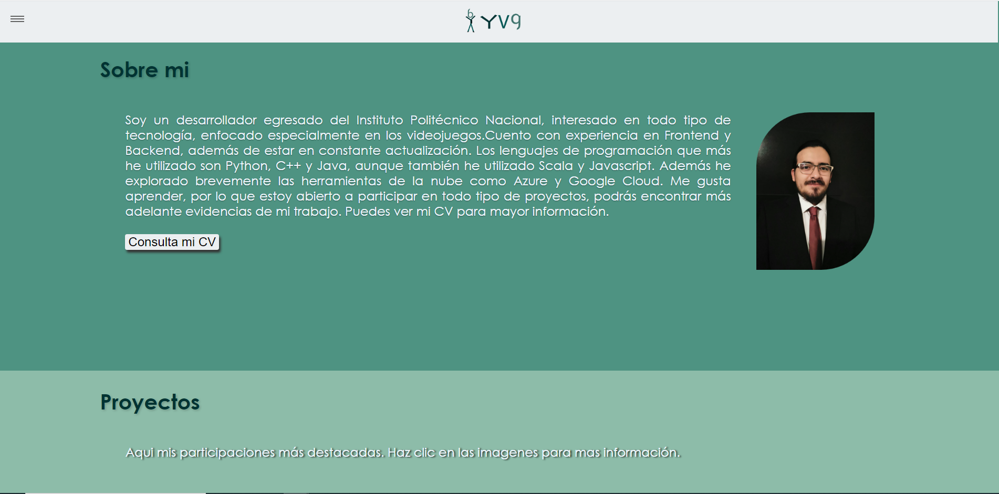

Pagina WEB desarrollada con el objetivo de contacto con potenciales clientes y como compilatorio del trabajo en su trayectoria. Tiene una seccion sobre mi, proyectos, certificiones y contacto. Esta página es el resultado de ese proyecto.
Herramientas utilizadas:


Evidencias:

Página web

Documentacion y código